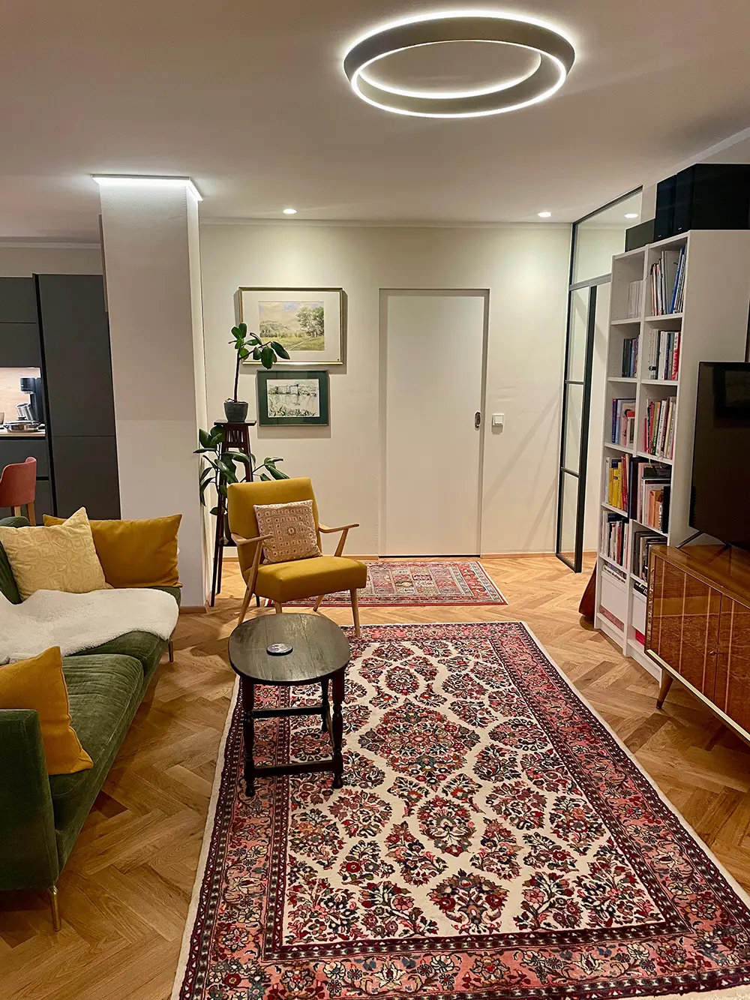

Baumanagement im Innenausbau
Wir begleiteten den Innenausbau als Baumanager. Für Bauherren führen wir dabei die Termine der einzelnen Gewerke zusammen und klären mit den ausführenden Firmen, wann der nächste Arbeitsschritt beginnen kann.
Mehr über Baumanagement